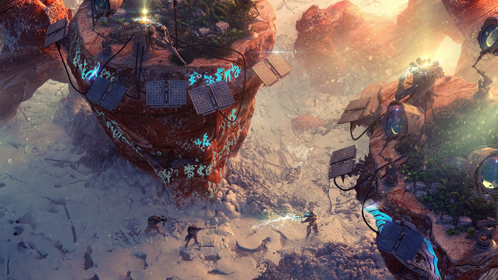

My squad of hardened wasteland warriors charges into battle alongside a goat, a swearing parrot, a cyborg chicken, and a cat who wears a little military hat. They may sound goofy, but by the end of the game that cat was one of my most consistent damage dealers.
The Wasteland games have always mixed grit with silliness, offsetting slavery and cannibalism with mutant killer bunnies and the like. That's one of the things that hasn't changed about Wasteland 3, which is still an RPG where malfunctioning toasters can be cracked open for sweet loot if you've got the Toaster Repair skill.
What's different is the setting. The endless sand of Arizona and California has been traded for the endless snow of Colorado, with your characters as a squad of Desert Rangers who are way out of their depth. You're sent north to cut a deal with the prosperous local leader for supplies your home desperately needs, which means helping the Patriarch of Colorado Springs round up his rebellious offspring. Each of his three large adult children have sided with different bizarre factions, from Reagan worshippers to Hispanic murderclowns, and you're thrust into this political shitfight with only your wits, an AI car, a bunch of guns, and those three points you probably shouldn't have put in Toaster Repair.
Another thing that's different is that Wasteland 3 is more streamlined, with less of the deliberately old school clunkiness of Wasteland 2. That was a game where you'd find a loot container then have the character with Perception check it for shenanigans, then a character with Alarm Disarming or Demolitions render it safe, then if it was locked use Lockpicking or Safecracking or Brute Force to actually open the damn thing. Now some of those skills have been deprecated (Lockpicking also lets you open safes, hallelujah), and if you click on something the character who has the right skill will just automatically interact with it.
Like its predecessors, Wasteland 3 is the kind of game where the most interesting story is the one you make, usually thanks to that juxtaposition of seriousness and silliness. Maybe you created a character who dressed like a clown and inflicted status effects on enemies by throwing yellow snowballs at them, or maybe you went into battle with a herd of vicious animals—at least until you got sick of them and abandoned even the swearing parrot to bleed out in the snow.